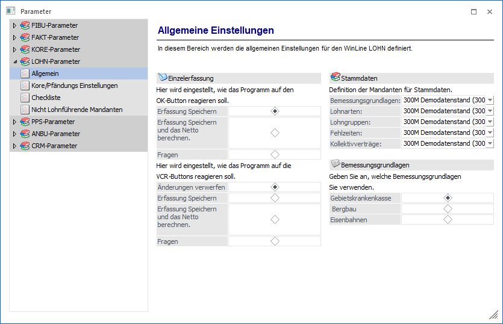

Einzelerfassung
Hier kann definiert werden, welche Funktion durch Anklicken des OK-Buttons bzw. durch Drücken der F5-Taste aufgerufen werden soll. Dabei gibt es 3 Möglichkeiten:
ü Erfassung Speichern
Durch
Drücken der F5-Taste werden die Erfassungszeilen des AN, der gerade bearbeitet
wurde, gespeichert. Außerdem wird automatisch die nächste AN-Nummer (in
alphanumerischer Reihenfolge) vorgeschlagen, die aktiv gesetzt ist.
Beispiel
AN-Nr 25 und 28 sind auf aktiv gesetzt, AN-Nr. 26 und 27 sind inaktiv gesetzt. Wurde AN-Nr. 25 bearbeitet und mit F5 gespeichert, wird als nächstes die AN-Nr. 28 vorgeschlagen.
ü Erfassung Speichern und das Netto
berechnen
Durch Drücken der F5-Taste werden die Erfassungszeilen des AN, der
gerade bearbeitet wurde, gespeichert und es wird auch gleich die Abrechnung
durchgeführt, wobei auch der Abrechnungsbeleg gedruckt wird. Danach wird
automatisch die nächste AN-Nummer (in alphanumerischer Reihenfolge)
vorgeschlagen, die aktiv gesetzt ist.
ü Fragen
Wenn die F5-Taste
gedrückt wird, wird ein Fenster geöffnet, in dem 3 Möglichkeiten angeboten
werden:
Speichern
Es werden nur die Erfassungszeilen
gespeichert.
Abrechnen
Es wird eine Abrechnung
durchgeführt
Abbrechen
Man gelangt wieder in das
Erfassungsfenster zurück.
Zusätzlich kann eingestellt werden, wie das Programm reagieren soll, wenn in der Einzelerfassung einer der VCR-Buttons angeklickt wird. Die VCR-Buttons bieten die Möglichkeit, durch die einzelnen Abrechnungen "durchzublättern", um sich die Erfassungszeilen der Reihe nach anzusehen bzw. auch Änderungen vorzunehmen. Auch hier gibt es 4 Möglichkeiten:
ü Änderung verwerfen
Das ist die
Standardoption. Damit werden eventuell durchgeführte Änderungen nicht
gespeichert.
ü Erfassung speichern
Mit dieser
Option werden durchgeführte Änderungen automatisch gespeichert.
Hinweis
Wurde ein AN bereits abgerechnet und dann eine Änderung durchgeführt, dann wird ein entsprechender Hinweis ausgegeben, dass die Abrechnung gelöscht und neu durchgeführt werden muss - erst damit kann dann die Änderung gespeichert werden.
ü Erfassung speichern und das Netto
berechnen
Mit dieser Option werden alle Erfassungen bzw. Änderungen
gespeichert und es wird auch gleich eine Netto-Abrechnung durchgeführt. Ist
bereits eine Abrechnung vorhanden, wird eine entsprechende Meldung
ausgegeben.
ü Fragen
Mit dieser Option
kann pro Datensatz entschieden werden, welche Aktion ausgelöst werden soll.
Dabei werden folgende Operationen angeboten:
Speichern
Es
werden nur die Erfassungszeilen gespeichert.
Abrechnen
Es wird
eine Abrechnung durchgeführt
Abbrechen
Man gelangt wieder in
das Erfassungsfenster zurück.
Stammdaten
Der WinLine LOHN ist so konzipiert, dass gewisse Stammdatenbereiche nur einmal erfasst werden müssen, und diese Stammdaten dann für mehrere Mandanten genutzt werden können.
Das hat den Vorteil, dass z.B. eine neue Lohnart nur einmal und nicht in jedem Mandanten angelegt werden muss.
In der Rubrik Stammdaten kann definiert werden, auf welchen Mandanten für gewisse Datenbereiche zugegriffen werden soll:
ü Bemessungsgrundlagen
Aus der
Auswahllistbox kann gewählt werden, aus welchen Mandanten die
Bemessungsgrundlagen (Beitragsgruppe, Höchstbemessungen) verwendet werden
sollen. Wenn der Mandant, in dem man sich gerade befindet, die Daten hält (wenn
es der Mandant ist, auf den alle anderen zugreifen), dann wird die gleiche
Mandantennummer eingetragen - der Mandant verweist auf sich selbst.
ü Lohnarten
Aus der
Auswahllistbox kann gewählt werden, aus welchen Mandanten die Lohnarten
verwendet werden sollen.
ü Lohngruppen
Aus der
Auswahllistbox kann gewählt werden, aus welchen Mandanten die Lohngruppen
verwendet werden sollen.
ü Fehlzeiten
Aus der
Auswahllistbox kann gewählt werden, aus welchen Mandanten die
Fehlzeiten-Stammdaten verwendet werden sollen.
ü Kollektivverträge
Diese Option
wird derzeit nicht unterstützt.
Wenn Stammdatenbereiche auf einen anderen Mandanten verweisen, hat das für die Stammdatenpflege keine sichtbare Auswirkung: Es werden die Stammdaten des gewählten Mandanten gewählt und bearbeitet - dadurch ergibt sich eine Änderung für alle Mandanten, die auf diesen einen verweisen.
Bemessungsgrundlagen
Mit dieser Option kann eingestellt werden, welche Beitragsgruppen verwendet werden sollen. Dabei stehen die Möglichkeiten
ü Gebietskrankenkasse
ü Bergbau
ü Eisenbahnen
die jeweils andere Beitragsgruppen einsetzten, zur Verfügung.
Je nach dieser Einstellung werden in den Bemessungsgrundlagentabellen auch nur die entsprechenden Beitragsgruppen zugelassen.